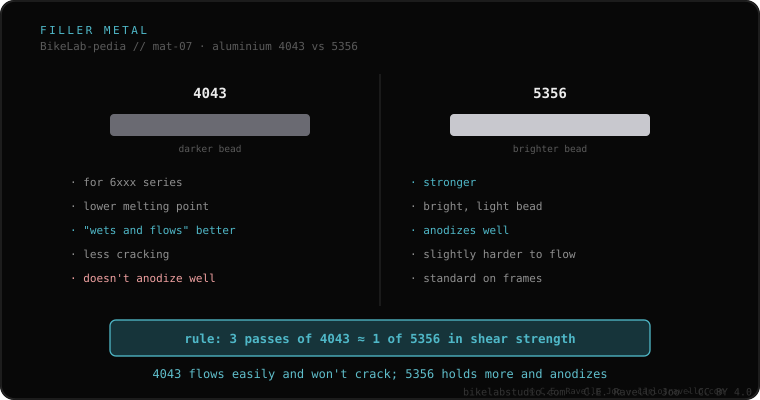

To weld aluminum you use one of two fillers. 4043 is meant for the 6xxx series: it melts at a lower temperature, flows and "wets" better, cracks less with 6061 and leaves a darker bead, but does not anodize well. 5356 is stronger, leaves a lighter, brighter bead, anodizes correctly and is the most common MIG wire. Practical shop rule: it takes ~3 passes of 4043 to match the shear strength of a single pass of 5356.
When you weld aluminum, the technique is not all that matters: what you fill it with matters too. And the choice between these two fillers leaves its mark on strength and finish.
4043 (4xxx family) is meant for the 6xxx-series alloys, like 6061. It melts at a lower temperature and so flows and "wets" the metal better: it fills more easily. It is less prone to cracking with 6061, which makes it comfortable and safe in many joints. Its price: it leaves a darker bead and does not anodize well —color does not take evenly—.
5356 (5xxx family) is stronger. It leaves a lighter, brighter bead and, unlike 4043, anodizes correctly, which matters when the frame will carry an anodized finish. It is the most common MIG wire. In return, it is a bit harder to make flow. The strength difference comes down to a shop rule: it takes about three passes of 4043 to match the shear strength of a single pass of 5356.

The filler is the piece that closes out welding aluminum. That is why it connects to the frame's alloy —4043 is designed for the 6xxx series— and to the technique used, since 5356 is the most common MIG wire. Knowing which filler will be used is also one of the useful questions to ask the welder.
If you want to understand which filler fits your case before deciding anything, send us the case. We give you the language, with nothing to sell. Message us on WhatsApp
4043 is meant for the 6xxx series: it melts at a lower temperature, flows and wets better and cracks less with 6061, but leaves a darker bead and does not anodize well. 5356 is stronger, leaves a lighter, brighter bead, anodizes correctly and is the most common MIG wire.
5356 is stronger. A practical shop rule sums it up: it takes about three passes of 4043 to match the shear strength of a single pass of 5356.
Because if the frame is going to be anodized, 4043 leaves a bead that does not take color evenly, while 5356 anodizes correctly. It is one of the reasons 5356 is the most common wire in aluminum MIG.